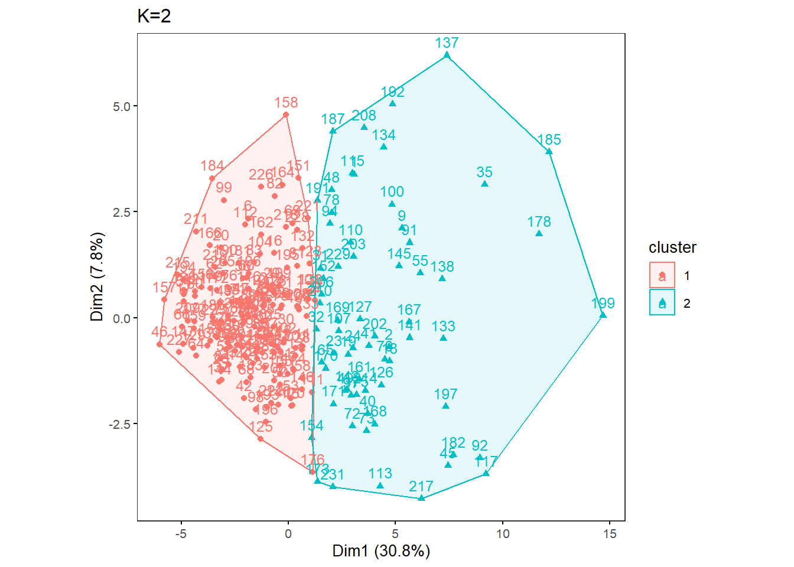
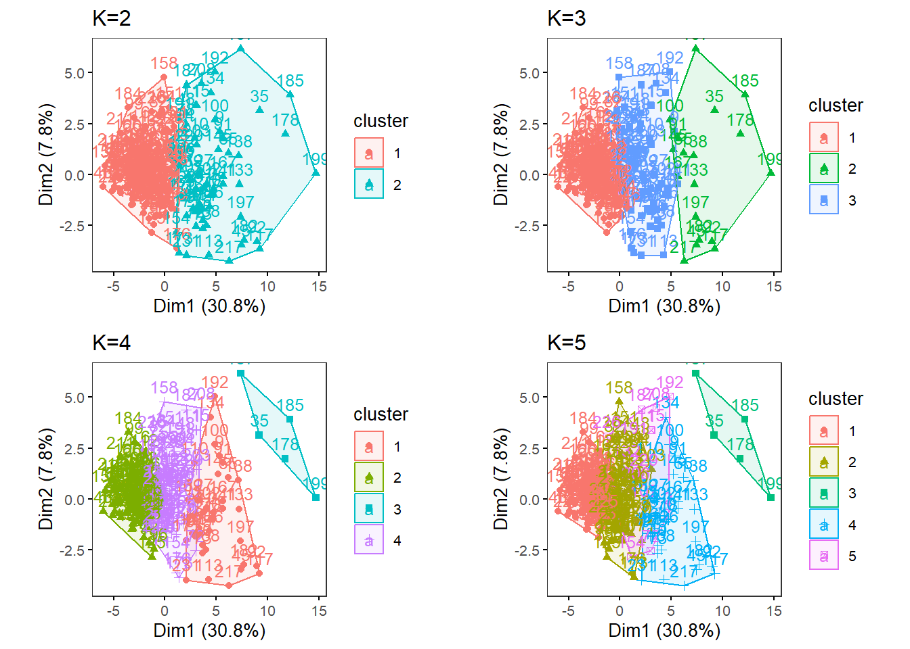
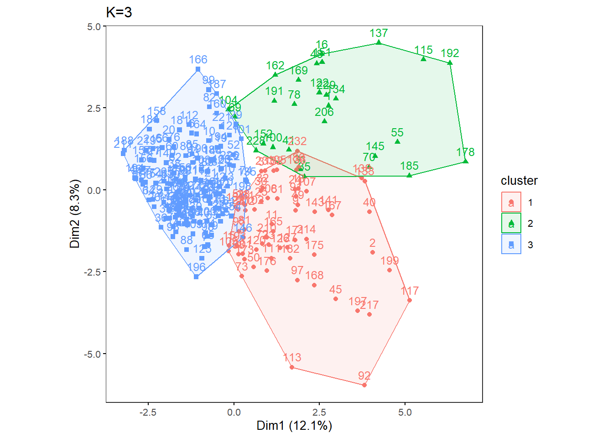
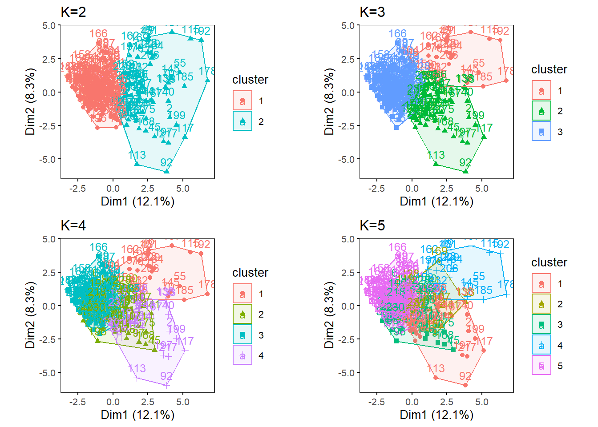

k-means
Introduction
Here, we will run k-means analysis with the NHANES 2-day average totals, subsetted for males, 60-79 years old.
Create two folders named “males60to79_Nut_k-means” and “males60to79_Cat_k-means” inside “Laboratory_data” to save k-means results of Nutrients and Food Category data, respectively.
Load functions and packages
Name the path to DietDiveR directory where input files are pulled.
main_wd <- "~/GitHub/DietDiveR"Load necessary packages.
library(ggplot2)
library(ggfortify)
library(cluster)
library(factoextra)Set your ggplot2 theme.
theme_set(theme_bw(base_size = 14))Import source code to run the analyses to follow.Load the necessary functions.
source("lib/specify_data_dir.R")
source("lib/k-means.R")You can come back to the main directory by:
setwd(main_wd)Specify the directory where the data is.
SpecifyDataDirectory(directory.name = "eg_data/NHANES/Laboratory_data/")Nutrient data, processed for clustering analyses
Your input data should be a data frame with uncorrelated variables with non-zero variance and with no missing data.
nut_kmeansinput <- read.table("QCtotal_d_ga_body_meta_glu_comp_2_males60to79_c_Nut_rv.txt",
sep="\t", header=T)Ensure your input file has the correct number of rows and columns.
dim(nut_kmeansinput)## [1] 233 38Scale your input file and name it as k-means_input.
kmeans_input <- scale(nut_kmeansinput)Specify the directory (folder) to save the results. (create a folder named as this if not done so)
res_dir_nut = "males60to79_Nut_k-means"Specify the prefix of filenames to be saved.
res_prefix_nut = "males60to79_Nut"Run the elbow, silhouette, and gap methods to find an optimum K (number of clusters).
Do not alter the name of the input file: kmeans_input. This function below assumes that the input is named as “kmeans_input”. You can only run those three methods for K = 1 through {number of observations - 1}. The gap method output will be printed on the Console. The gap values are plotted in xxx_gapmethod.pdf.
ChooseK(out.dir= res_dir_nut, out.prefix= res_prefix_nut)## Clustering Gap statistic ["clusGap"] from call:
## clusGap(x = kmeans_input, FUNcluster = kmeans, K.max = k.values[length(k.values)], B = 50, nstart = 25)
## B=50 simulated reference sets, k = 1..14; spaceH0="scaledPCA"
## --> Number of clusters (method 'firstmax'): 2
## logW E.logW gap SE.sim
## [1,] 6.150070 6.972681 0.8226108 0.007558117
## [2,] 6.036185 6.888746 0.8525616 0.007272901
## [3,] 6.002307 6.851715 0.8494081 0.006786687
## [4,] 5.974293 6.821833 0.8475405 0.006445700
## [5,] 5.947021 6.798339 0.8513187 0.006603890
## [6,] 5.924153 6.778219 0.8540662 0.007025167
## [7,] 5.898831 6.760414 0.8615828 0.006986434
## [8,] 5.880824 6.744604 0.8637801 0.006801836
## [9,] 5.856029 6.730063 0.8740340 0.006800283
## [10,] 5.841073 6.716490 0.8754175 0.006740785
## [11,] 5.821761 6.703855 0.8820942 0.006881840
## [12,] 5.808938 6.691759 0.8828205 0.006940483
## [13,] 5.791567 6.680376 0.8888092 0.006644822
## [14,] 5.777561 6.669002 0.8914409 0.006422340The Gap method output on the console may say “Warning message: did not converge in 10 iterations.”
If this happens, the optimum K suggested may not be as conclusive, but we can proceed for now while keeping that in mind.
As we saw in the k-means analysis with ASA24 data, this code will generate three output files all at once in the res_dir_xxx:
| Output file postfix | File content |
|---|---|
| _elbowmethod.pdf | Shows total within−clusters sum of squares for each K. |
| _gapmethod.pdf | Shows the Gap statistic (k) for each K, and if the factoextra package is used, the optimal K is marked by a dotted line. |
| _silhouettemethod.pdf | Shows the Average silhouette width (~ goodness of fit) for each K, and if the factoextra package is used, the optimal K is marked by a dotted line. |
Look at the three figures generated by the ChooseK function above. The elbow and gap method did not give a distinct peak (though the gap method indicates K=2 might be optimal), but the silhouette methods gave a peak at K=2.

Output of the elbow method

Output of the gap method

Output of the silhouette method
With specific K values in mind, perform k-means analysis with one specified K. Also, change the file name to be saved as a PDF. This uses the factoextra package.
OneK(myK= 2, out.dir= res_dir_nut, out.fn = "males60to79_Nut_K2")oneKplot
Or try multiple Ks and print respective biplots in one panel.
Likewise, change the file name to be saved as a PDF as necessary. This uses the factoextra and gridExtra packages.
MultipleK(myKs = c(2,3,4,5), out.dir = res_dir_nut, out.fn = "males60to79_Nut_K2-5")
Food category data, processed for clustering analyses
Your input data should be a data frame with uncorrelated variables with non-zero variance and with no missing data.
cat_kmeansinput <- read.table("QCtotal_d_ga_body_meta_glu_comp_2_males60to79_c_Cat_rv.txt",
sep="\t", header=T)Ensure your input file has the correct number of rows and columns.
dim(cat_kmeansinput)## [1] 233 31Scale your input file and name it as k-means_input.
kmeans_input <- scale(cat_kmeansinput)Specify the directory (folder) to save the results.
res_dir_cat = "males60to79_Cat_k-means"Specify the prefix of filenames to be saved.
res_prefix_cat = "males60to79_Cat"Run the elbow, silhouette, and gap methods to find an optimum K (number of clusters). Do not alter the name of the input file: kmeans_input. This function below assumes that the input is named as “kmeans_input”. You can only run those three methods for K = 1 through {number of observations - 1}. The gap method output will be printed on the Console. The gap values are plotted in xxx_gapmethod.pdf.
ChooseK(out.dir= res_dir_cat, out.prefix= res_prefix_cat)## Warning: did not converge in 10 iterations
## Warning: did not converge in 10 iterations## Clustering Gap statistic ["clusGap"] from call:
## clusGap(x = kmeans_input, FUNcluster = kmeans, K.max = k.values[length(k.values)], B = 50, nstart = 25)
## B=50 simulated reference sets, k = 1..14; spaceH0="scaledPCA"
## --> Number of clusters (method 'firstmax'): 2
## logW E.logW gap SE.sim
## [1,] 6.077407 6.823007 0.7456004 0.007190084
## [2,] 6.022779 6.781099 0.7583202 0.007088643
## [3,] 5.999514 6.754640 0.7551255 0.007103413
## [4,] 5.977161 6.732629 0.7554676 0.007004655
## [5,] 5.960613 6.713888 0.7532751 0.006951759
## [6,] 5.940540 6.697324 0.7567846 0.007075712
## [7,] 5.918677 6.682256 0.7635787 0.007051532
## [8,] 5.904437 6.668338 0.7639010 0.006789814
## [9,] 5.883634 6.655356 0.7717221 0.007049463
## [10,] 5.865838 6.642750 0.7769119 0.007257051
## [11,] 5.844629 6.631363 0.7867344 0.007228006
## [12,] 5.830350 6.620251 0.7899009 0.007318270
## [13,] 5.807032 6.609471 0.8024391 0.007124858
## [14,] 5.798131 6.599320 0.8011884 0.007234342Look at the three figures generated by the ChooseK function above. The elbow and gap method did not give a distinct peak (though the gap method indicates K=2 might be optimal), but the silhouette method gave a peak at K=3.

Output of the elbow method

Output of the gap method

Output of the silhouette method
With specific K values in mind, perform k-means analysis with one specified K. Also, change the file name to be saved as a PDF.
OneK(myK= 3, out.dir= res_dir_cat, out.fn = "males60to79_Cat_K3")oneKplot
Or try multiple Ks and print respective biplots in one panel.
Likewise, change the file name to be saved as a PDF as necessary. This uses the factoextra and gridExtra packages.
MultipleK(myKs = c(2,3,4,5), out.dir = res_dir_cat, out.fn = "males60to79_Cat_K2-5")
Come back to the main directory.
setwd(main_wd)